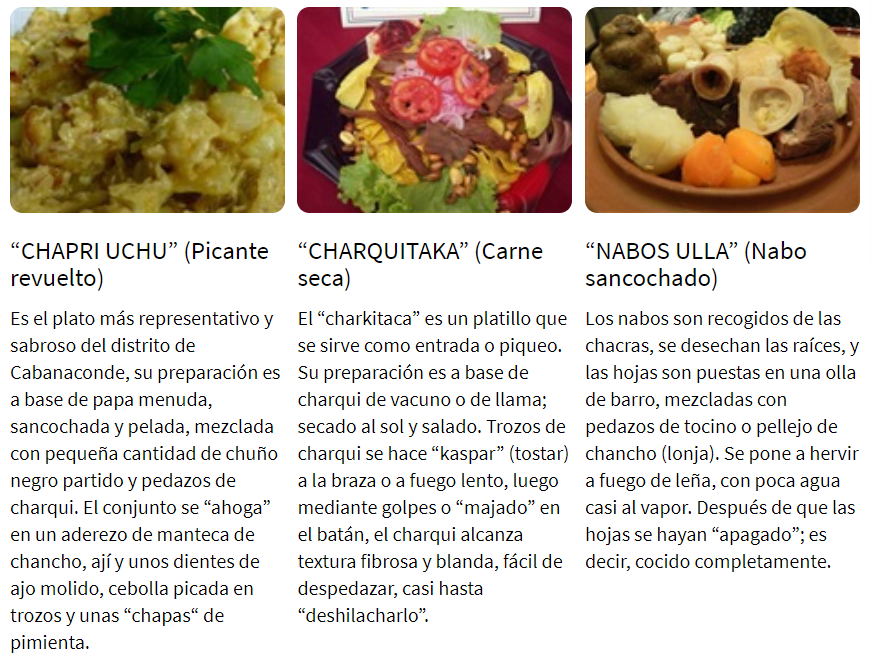
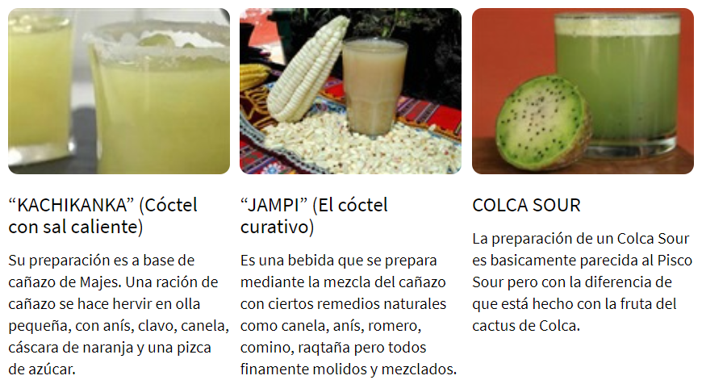

1) Recorrer los Pueblitos del Valle del Colca
El valle está ubicado en la parte noreste de Arequipa, en la provincia de Caylloma. Allí, se puede realizar diversas actividades como los deportes de aventura, la experiencia del turismo vivencial en las comunidades nativas y la contemplación de la naturaleza en todo su esplendor.
2) Conocer el condor andino
Una vez en el Colca, no puedes dejar de ir al Mirador de la Cruz del Cóndor, donde podrás observar el majestuoso vuelo de esta ave andina, considerada la más grande del mundo. Sus predominantes alas extendidas que alcanzan los tres metros de longitud y que tan solo planean sin movimiento, es un espectáculo en el cielo.
3) Probar Platos Típicos de Caylloma
Al llegar al Cañón del Colca muchos solo se aventuran a visitar la cruz del condor lugar emblemático del Colca, y después de avistar al condor y hacer una caminata por el lindero del cañon parando en cada mirador, regresan a Chivay o a Arequipa según el recorrido del tour que eligieron, pero son pocos los que continúan con el recorrido hasta Cabanaconde. Para muchos que llegan a Cabanaconde y observan las costumbres de la zona, notarán que en cuanto a la comida los cabanacondinos prefieren tomar sus alimentos en los restaurantes, donde preparan platos diversos, pero hace mucho tiempo consumían solo los platos típicos de la zona, a continuación una relación de platos y bebidas.
 